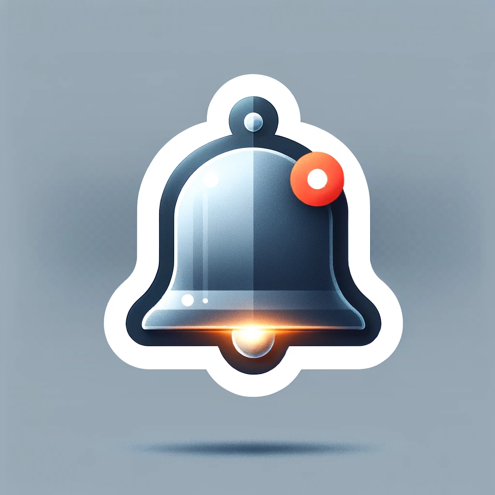

<div class="header">
  <button (click)="buscarCompeticao()">{{ router.url !== '/busca' ? 'Buscar competição' : 'Tela Inicial' }}</button>
  <button (click)="cadastrarCompeticao()">{{ router.url !== '/cadastro-competicao' ? 'Cadastrar Competição' : 'Tela Inicial' }}</button>
  <button (click)="cadastrarCompetidores()">{{ router.url !== '/cadastro-competidores' ? 'Cadastrar Competidores' : 'Tela Inicial' }}</button>

  <!-- Ícone de notificações -->
  <div class="notification-menu" *ngIf="usuario">
    
    <span class="badge">{{ numeroDeNotificacoes }}</span>
    <div class="dropdown-menu" *ngIf="notificationDropdownAberto">
      <div class="notification-list">
        <a *ngFor="let notificacao of notificacoes" [routerLink]="['/notificacoes', notificacao.id]" class="notification-item">
          {{ notificacao.titulo | slice:0:50 }}{{ notificacao.titulo.length > 50 ? '...' : '' }}
        </a>
      </div>
    </div>
  </div>

  <!-- Ícone do usuário logado -->
  <div class="user-menu" *ngIf="usuario">
    
    <div class="dropdown-menu" *ngIf="dropdownAberto">
      <a routerLink="/perfil-usuario">Meu Perfil</a>
      <a routerLink="/meus-competidores">Meus Competidores</a>
      <a routerLink="/minhas-inscricoes">Minhas Inscrições</a>
      <a routerLink="/minhas-competicoes">Minhas Competições</a>
      <a (click)="logout()">Sair</a>
    </div>
  </div>

  <!-- Se o usuário não estiver logado, exibir os botões de Login/Cadastro -->
  <ng-container *ngIf="!usuario">
    <button (click)="cadastrar()">Cadastrar-se</button>
    <button (click)="login()">Login</button>
  </ng-container>
</div>
